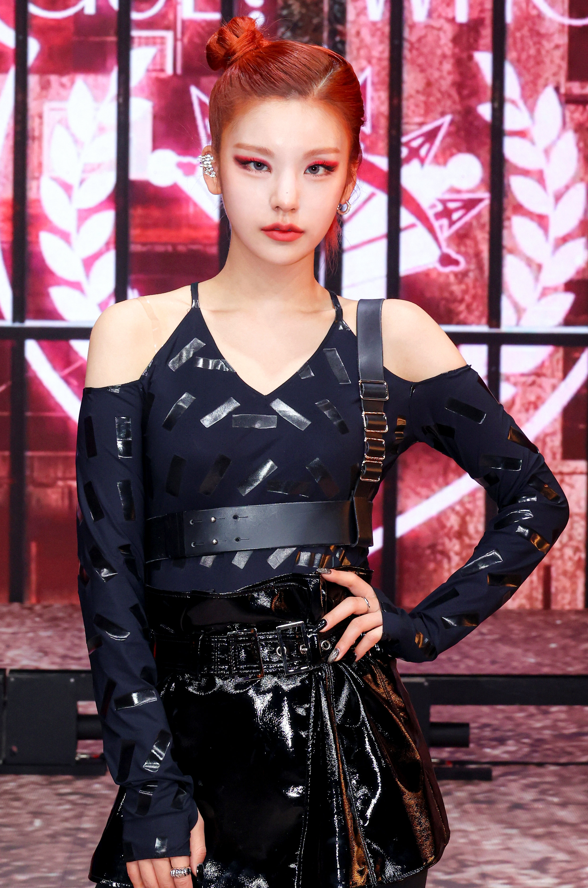

Yeji
| Nama | : | Hwang Yeji |
|---|---|---|
| Tanggal Lahir | : | 26 Mei 2000 |
| Posisi | : | Leader, Main Dancer, Main Vocalist, Main Rapper |
| Kewarganegaraan | : | Korea Selatan |
| Tinggi Badan | : | 170 cm |
| Nama | : | Hwang Yeji |
|---|---|---|
| Tanggal Lahir | : | 26 Mei 2000 |
| Posisi | : | Leader, Main Dancer, Main Vocalist, Main Rapper |
| Kewarganegaraan | : | Korea Selatan |
| Tinggi Badan | : | 170 cm |
| Nama | : | Shin Ryujin |
|---|---|---|
| Tanggal Lahir | : | 17 April 2001 |
| Posisi | : | Lead Dancer, Rapper |
| Kewarganegaraan | : | Korea Selatan |
| Tinggi Badan | : | 165 cm |
| Nama | : | Choi Jisu |
|---|---|---|
| Tanggal Lahir | : | 21 Juli 2000 |
| Posisi | : | Main Vocalist |
| Kewarganegaraan | : | Korea Selatan |
| Tinggi Badan | : | 163 cm |
| Nama | : | Lee Chaeryeong |
|---|---|---|
| Tanggal Lahir | : | 5 Juni 2001 |
| Posisi | : | Lead Dancer, Lead Vocalist |
| Kewarganegaraan | : | Korea Selatan |
| Tinggi Badan | : | 168 cm |
| Nama | : | Shin Yuna |
|---|---|---|
| Tanggal Lahir | : | 9 Desember 2003 |
| Posisi | : | Lead Dancer, Vocalist, Visual, Maknae |
| Kewarganegaraan | : | Korea Selatan |
| Tinggi Badan | : | 170 cm |